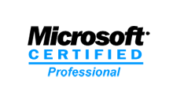

I am a results oriented professional with almost 20 years dedicated to developing quality software and the advancement of the QA discipline. Skilled in planning and implementing the correct process for the project at hand, and utilizing the right tools and workflow to ensure a successful launch. My passion is in mentoring my team to help them grow within the discipline and fulfill their potential in the Software Industry.
Develop and maintain a full stack cloud computing platform for a leading cloud computing service provider. Add new features and improve existing functionality for a platform serving 16 datacenters worldwide.
Continued my work as a Lead Software Test Engineer in the CenturyLink organization following the acquisition of Tier3. Part of this transition included a move to a Combined Engineering approach in which the Software Engineers were to own quality. In order for this to be successful, the Test team was asked to mentor the Software Engineers on best test practices and the Software Engineers were asked to mentor the Test Engineers on best development practices.
I was brought in to create and build the test organization for a small up and coming Cloud Computing IaaS startup. This included working with the development team to institute procedures for testing new features and getting them ready to ship. The test approach included a combination of both Manual and Automated testing. The Test Team was responsible for building and maintaining a suite of Selenium tests that were used for daily validation as well as deployment validation. In addition to hands-on testing, I was responsible for hiring and mentoring a small team of test engineers whom I mentored in various QA methodologies and development practices.
Manage a team of 7+ test engineers in a high-paced Consultancy/Agency environment building custom applications for a variety of high profile customers. Conduct performance reviews with each tester to assist in their professional development. Act as the Test Lead for large scale projects utilizing a wide range of technologies including custom .NET code, SharePoint, Drupal, and Amazon Webstore. Build custom test automation tools or utilize existing test automation frameworks as needed for each project.
Create and execute test plans on a 3 tier server-based product utilizing ASP.NET and C# on W2K, SQL2000, and IIS. Perform component, integration and load tests. Identify and document product defects and suggest improvements. Fulfill both black box and white box testing requirements. Work with Product Management and Development to ensure that potential risks are identified in early project phases. Evaluate system metrics. Travel to customer sites to install/configure custom solutions. Maintain Test Lab hardware/software using Norton Ghost.
Create and execute test plans for a DOS based professional tax preparation software package, identifying and documenting product defects. Test areas include user interface functionality and usability, printer compatibility and accuracy, and communications via modem on DOS/Win95/98/NT platforms.
Train and supervise 40+ contract Customer Support Representatives, identify and escalate high priority issues, and provide onsite and remote support for VIP customers. Monitored the Customer Service Representatives and maintained a high standard of support for customers both on and off site.
Provided customer support to professional tax preparers, including basic operating system (DOS, Win95, 98,NT), hardware (Modem, Printer), and software support, in addition to EFile tax return status updates.
Digital marketing campaign testing for various clients (Brooks, Burton, Virgin Health)
Tested an application that provided restaurant patrons the ability to search and review the available wine list via a tablet PC. I prepared the tablet OS images, developed a service to install the latest version remotely, and traveled on-site to deploy and update the systems.
